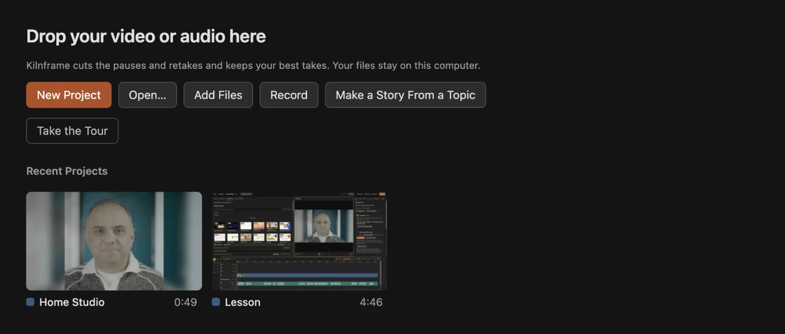
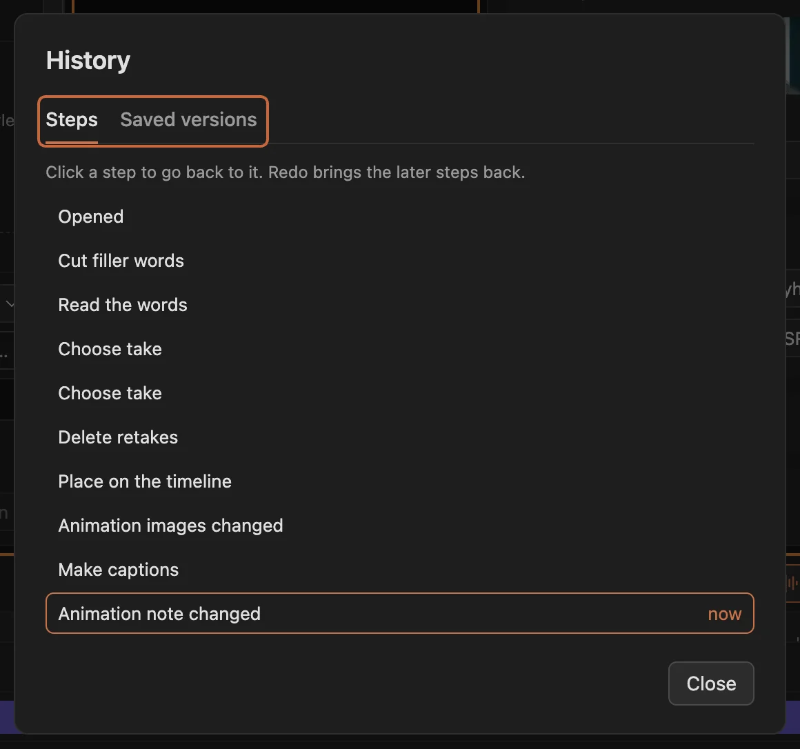

Projects and files
A project is a .kiln file with a folder of its own beside it. It saves itself on every change, and keeps its earlier versions.
The File menu
The File menu at the top left:
- New Project, Open… and Open Recent.
- Start Window: the window with the drop area and your Recent Projects.
- Save and Save As…
- Find Media… and Collect Project… (below).
- Export… and Export Frame…, Brand Kits…, Record… and Add Files…

New projects go to a Kilnframe folder in your Documents unless you choose another place. Next to Home Studio.kiln sits the folder Home Studio Files: the animations, voices and pictures the app makes for the project live there. Keep the two together.
Saved by itself
Saved beside the project's name says the last change is on disk. There is nothing to remember to press.
History
History in the top bar has two tabs:
- Steps: every change since the project was opened. Click a step to go back to it; Redo brings the later steps back.
- Saved versions: earlier states of the project. Recent saves are kept one by one, older ones every quarter hour. Go Back to This returns to one, and that can be undone too.

When files have moved
If a recording is no longer where the project left it, the clip says Missing. Find it. Open File › Find Media… and press Find… beside a missing file. When you find one, the others in the same folder are found with it. Kilnframe checks that it is the same recording before it uses it.
Move a project to another computer
File › Collect Project… copies the project file, its folder and every media file it uses into one new folder. Press Choose Folder…, tick As a zip file if you want one file, and press Collect. The open project stays as it is.